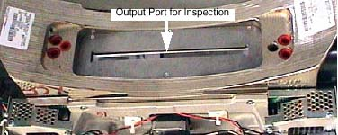

Operating Documentation
Direction 5196839-800, Rev# 6
RT16 and Xtra Service Info Adv
Operating Documentation |
Image Artifacts have been generated and reported on some CT systems due to the contamination of the bowtie and the primary copper filter. This contamination is from the lubricating grease used on the filter positioning drive screw assembly.
The following information may apply in general to all 46-296300G5, 2214768, 2214768-2 and 2214768-3 Collimators.
The inspection takes less than 5 minutes. It consists of simply examining the Copper primary filter.
Bright Flashlight
Remove Mylar Scan Window
Launch Diagnostic Data Collection, DDC, from the Service Desktop.
Select [DIAGNOSTICS] .
Select [DIAGNOSTIC DATA COLLECTION] .
Select [POSITION TUBE] .
Enter 180 and execute.
Select [STATIC X-RAY OFF] .
Filter [AIR] .
Slice Collimation Largest Aperture, 4 x 5.00 for example.
Select [ACCEPT RX] .
Using a flashlight, inspect the primary copper filter by looking down into the collimator output port. See Illustration 1.
| NOTE: | The copper filter should be clean, dent and scratch free. Discoloration is acceptable. |
If contamination is visible (see Illustration 2) , proceed to Collimator Cleaning Procedure (RT)
Illustration 1: Collimator Output Port

Illustration 2: Extremely Contaminated Copper Filter